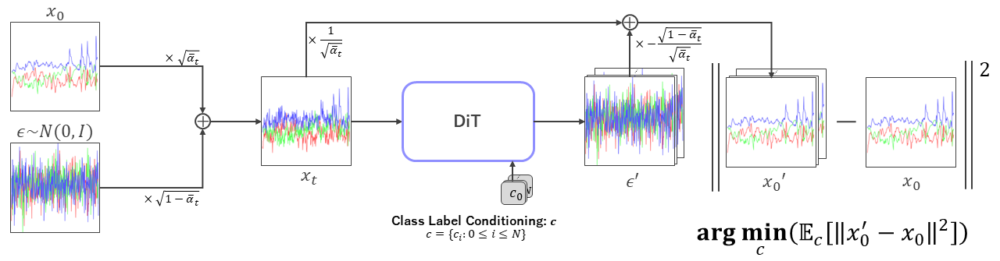
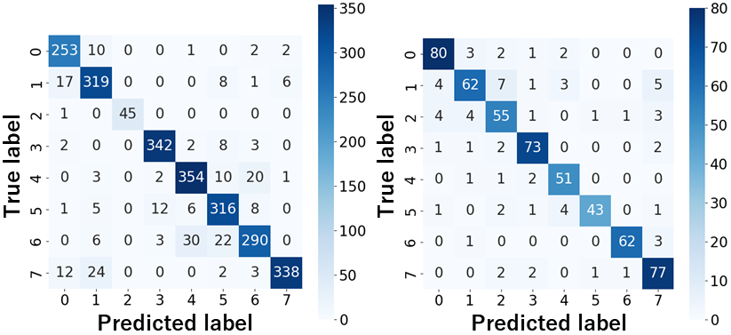
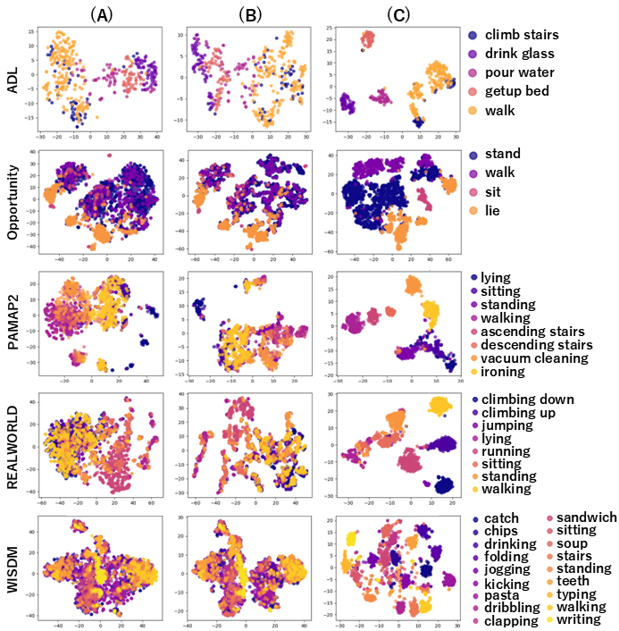
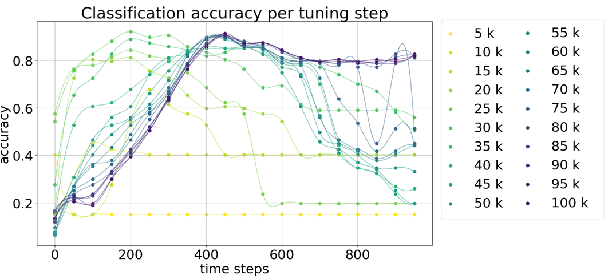
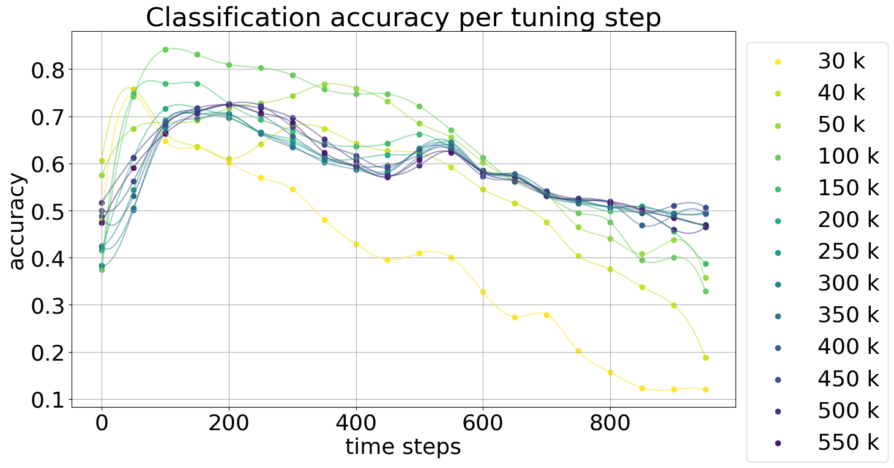

The figure provides an overview of RepcondClassifier. DiT is trained to predict the source noise $\epsilon$ present in the received signal $x_T$. During this process, all class labels $c$ are conditioned, and $\epsilon'$, which estimates the source noise $\epsilon$, is generated for each class. The predicted original signal $x_{0}'$ is derived from $x_T$ and $\epsilon'$, with the closest match to the original signal being the predicted classification result.

The figure shows the confusion matrices for the RepcondFormer classifier on the REALWORLD dataset and the RepcondClassifier on the PAMAP2 dataset. The left matrix represents results from RepcondFormer using fine-tuning, and the right matrix displays results from RepcondClassifier.

The figure displays signal features with class labels mapped into low dimensions using t-SNE. All five datasets are plotted from top to bottom. (A) The left column shows the raw data. (B) The second column depicts the representation encoded by RepcondFormer after training the diffusion models. (C) The right column shows the representation encoded by RepcondFormer after fine-tuning.

The figure displays the progression of accuracy across different time steps of the diffusion model using the ADL dataset, with the various stages of training during tuning represented by different colors.

The figure displays the progression of accuracy across different time steps of the diffusion model using the PAMAP2 dataset, with the various stages of training during tuning represented by different colors.

The figure shows signals generated for each class in the PAMAP2 dataset. It includes eight activity classes. The left panel displays signals randomly extracted from the eight ground-truth datasets, while the right panel shows signals generated by conditioning on each class label.